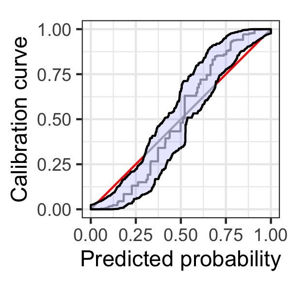
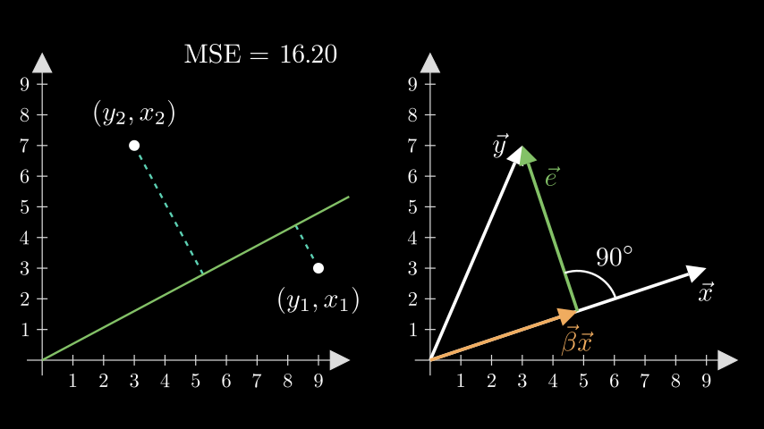
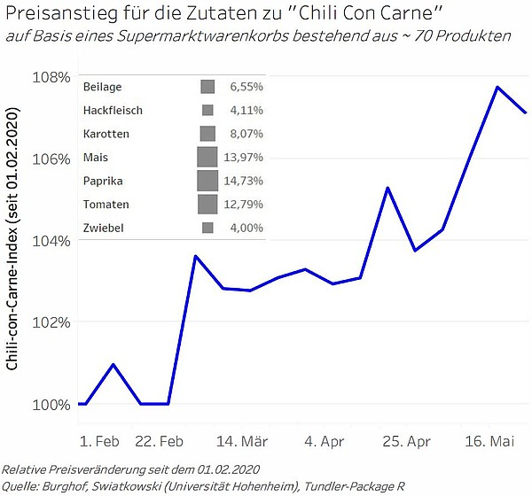

Marius Puke
I am a PhD student at the Department of Econometrics and Statistics at the University of Hohenheim. My doctoral thesis focuses on assessing point and probability forecasts in economics and finance.
 This package provides a robust method for assessing the calibration of probabilistic classifiers using confidence bands for monotonic functions. In addition to testing the traditional null hypothesis of perfect calibration, the confidence bands provided by the package enable inverted calibration tests. By rejecting these tests, users can conclude that their model is sufficiently well-calibrated. Moreover, the package includes highly flexible graphical tools for conducting these assessments. It's worth noting that the computation of confidence band can be quite demanding, which is why the package relies on efficient C++ implementations. The package was devloped in joint work together with Timo Dimitriadis and Alexander Henzi.
 Together with Robert Jung and Domenic Franjic, we've been able to raise 10,000 EUR in an internal university competition. This collaborative project aims to create educational videos that explain complex econometric and statistical concepts in an easy-to-understand manner, using manim - a widely used Python package for producing high-quality visualizations. We plan to make the videos available in the near future.
 This project was carried out during my time as student assistant at the Department of Banking and Financial Services at the University of Hoheneheim together with Jan Swiatkowski and Hans-Peter Burghof. We tracked the food prices of European supermarket chains and monitored the prices of the ingredients needed to prepare the popular dish 'chili con carne' for more than half a year. This allowed us to illustrate food price inflation, which was soaring during the first Covid year. What started as a just-for-fun project was heavily promoted by the media; including Frankfurter Allgemeine Zeitung, Bloomberg, Stuttgarter Zeitung, Berliner Zeitung, and Fokus.